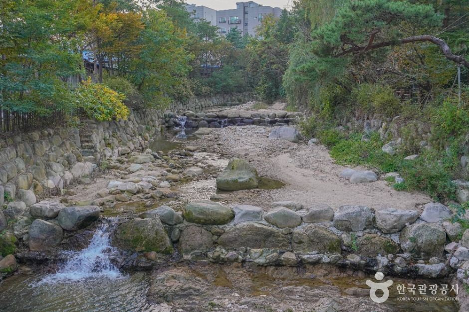
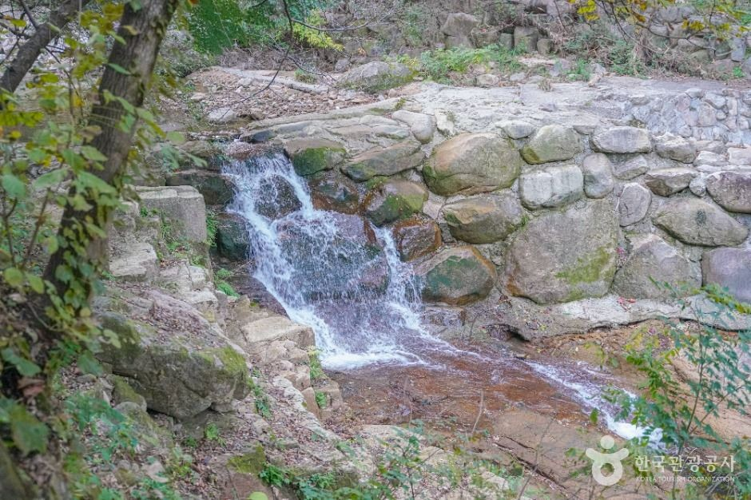
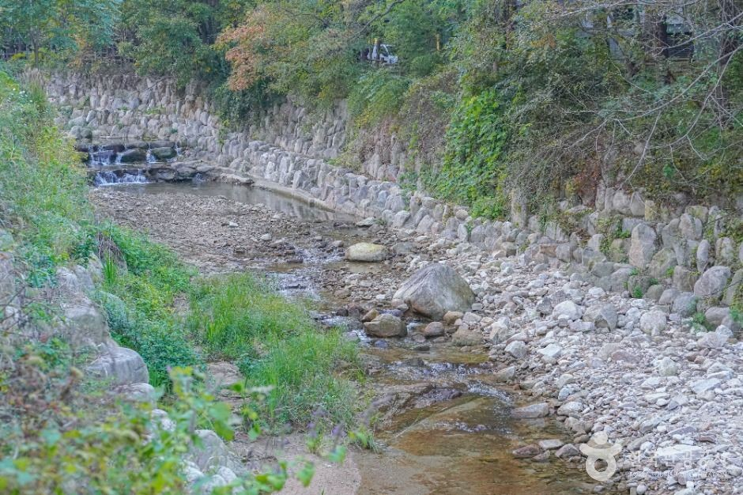
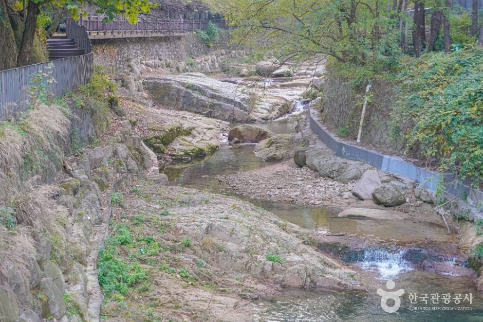
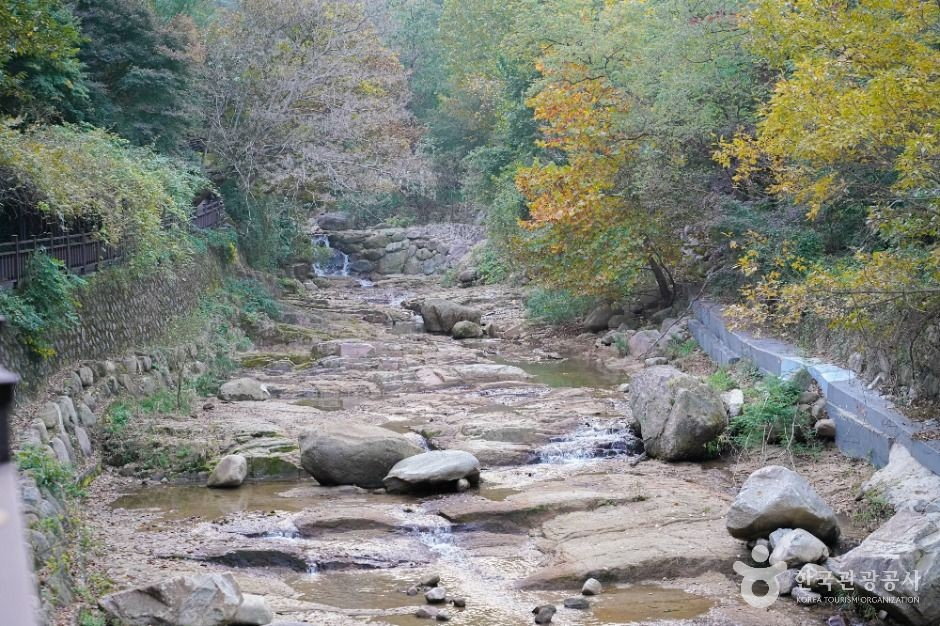

Ui-cheon Stream Guide: Overview
This Ui-cheon Stream guide covers one of north Seoul's most pleasant local walks: a clear stream that comes down from Bukhansan through Ui-dong Valley and then flows past Suyu-dong in Gangbuk-gu on an easy paved riverside path. Few international visitors come here, yet it is only about 40 minutes by subway from central Seoul.
Upstream, Ui-dong Valley has rocky pools, small waterfalls and temples. Downstream, the Uigyo–Ssanghangyo stretch has the Jaeganjeong riverside café and culture space and hosts the Ui-cheon Festa, Gangbuk-gu's riverside festival. We checked details against Korea Tourism Organization (KTO) data, Gangbuk-gu notices, Seoul City's media hub and Korean news reports.
"Start in a Bukhansan valley with nine historic bends, finish by the stream with a coffee and a view of the mountain."

Ui-dong Valley and the Nine Bends of Ui-gugok
KTO describes Ui-dong Valley as Gangbuk's best-known valley, set between Dobongsan and Bukhansan. The nine bends of the stream here are called Ui-gugok, a name given by the Joseon scholar Hong Yang-ho, who lived in the area from 1762. He named each bend and wrote Ui-dong Gugok-gi, which KTO notes is the only surviving gugok (nine-bends) literature about Seoul.
Steps and paths make the lower valley easy to explore. Walk about 20 minutes upstream and the mood turns quiet, with a Won Buddhist retreat and temples such as Seongbulsa, Yongdeoksa, Seonunsa and Gwangmyeongsa. Streamside restaurants serve summer favourites like chicken porridge (dak-juk), and Bukhansan trails, including the route toward Baegundae Peak, start nearby.

The Riverside Walk and Jaeganjeong
Below Ui-dong, the stream widens and runs between Suyu-dong and Ssangmun-dong with walking and cycling paths on its banks. Seoul City's media hub notes that Ui-cheon's source is near Uiryeong Pass and that it joins Jungnangcheon at Seokgwan-dong. Look for the statues of Dooly the Little Dinosaur and friends by the path; the cartoon is set in nearby Ssangmun-dong.
Jaeganjeong (재간정, "pavilion in the valley") opened on October 20, 2025 at 18 Dobong-ro 101-gil as part of Seoul's riverside revitalisation project. The single-storey, 330.9 m² space has a long glass wall facing the stream and Bukhansan, a café, books and an LP listening corner. It opens Tuesday to Sunday, 10 am–9 pm, and closes on Mondays and main holiday days.

Ui-cheon Festa 2026: Wellness in Wonderland
The Ui-cheon Festa 2026 turned the Uigyo–Ssanghangyo stretch into an Alice in Wonderland-themed wellness festival from October 16 to 18, 2026, 1–8 pm each day. Programmes included a White Rabbit photo zone at the entrance, a craft and food market of about 20 local teams below Jaeganjeong (with reusable dishes), cake and hanji-postcard workshops, barre and singing-bowl yoga sessions, puppet shows and busking.
A literary path between Jaeganjeong and Suyugyo displayed lines by writers including Han Kang, and the Suyugyo–Ssanghangyo section showed work by colour painter Park Saeng-kwang, who lived in Suyu-dong. Gangbuk-gu reported about 40,000 visitors; the final day's programme was stopped early because of a heavy rain and wind warning. No 2027 date has been announced yet.
Visitor Information
| Item | Details |
|---|---|
| Ui-dong Valley | 141-5 Samyang-ro 181-gil, Ui-dong, Gangbuk-gu, Seoul (서울특별시 강북구 삼양로181길 141-5) |
| Jaeganjeong | 18 Dobong-ro 101-gil, Suyu-dong, Gangbuk-gu (서울 강북구 도봉로101길 18) |
| Hours | Valley and paths open all year; Jaeganjeong Tue–Sun 10:00–21:00 |
| Closed | Valley: never; Jaeganjeong: Mondays and main holiday days |
| Admission | Free |
| Info centre | Bukhansan National Park Ui office, +82-2-997-8365 |
| Nearest stations | Bukhansan Ui (Ui-Sinseol Line) for the valley; Suyu (Line 4, exit 8, about 750 m) for Jaeganjeong |
| Festival | Ui-cheon Festa 2026 ran Oct 16–18 (Uigyo–Ssanghangyo); Gangbuk-gu Culture & Tourism |
| Nearby | Bukhansan trails, Ui-dong temples, Suyu markets, 4.19 National Cemetery |
Sources: Korea Tourism Organization data for Ui-dong Valley (우이동계곡); Gangbuk-gu notice for Ui-cheon Festa 2026; Yonhap News (Oct 12, 2026) and Seoul Dongbuk Shinmun festival reports; Seoul City media hub and Yonhap (Oct 20, 2025) on Jaeganjeong; Digital Dobong Culture Encyclopedia on Ssanghangyo. Photos of Ui-dong Valley © Korea Tourism Organization (KOGL Type 1, attribution), unmodified. No AI-generated images.


Getting There
For the valley, ride the Ui-Sinseol Line to its last stop, Bukhansan Ui Station, then follow the road uphill toward Ui-dong Valley. The light-rail line connects with Line 4 at Seongsin Women's University Station and with Line 6 at Bomun.
For the lower stream and Jaeganjeong, take Line 4 to Suyu Station; exit 8 is about 750 m from Jaeganjeong. Seoul City also suggests Ssangmun Station exit 3, then village bus Dobong 05 or 06 to the Hanil Hospital stop, three minutes on foot. A good half-day: start at Ui-dong Valley in the morning, walk or ride down to Suyu, and end at Jaeganjeong.
Tips for Visiting
- Go downhill: start at Bukhansan Ui Station and finish near Suyu Station, so most of the walking is downhill.
- Dress for the season: late-November sunset in Seoul is around 5:15 pm, and the valley is colder than downtown.
- Stay on paths: rocks by the water are slippery, especially with wet autumn leaves.
- Bring cash or a T-money card: handy for small streamside restaurants and village buses.
- Check festival news: follow @with_uicheon and Gangbuk-gu notices for the next Ui-cheon Festa or winter lighting events.
How It Compares with Other Seoul Stream Walks
| Ui-cheon & Ui-dong Valley | Cheonggyecheon | Hongjecheon | |
|---|---|---|---|
| Setting | Mountain valley to neighbourhood stream | Downtown restored stream | Urban stream with a waterfall café |
| Crowds | Quiet, local | Busy, especially evenings | Moderate |
| Highlights | Ui-gugok bends, temples, Jaeganjeong | City lights, lantern festival | Hongje waterfall |
| Access | Ui-Sinseol Line / Line 4 | Line 1, 2, 5 | Line 3 |
| Best for | Nature walks with a café stop | First-time visitors | Short city walks |
Who It Suits
- Great for: Travellers who want a quiet, local side of Seoul near Bukhansan.
- Great for: Walkers combining a short valley hike with a riverside café.
- Great for: Families who like flat paved paths and cartoon statues.
- Less ideal: Visitors short on time who want big landmarks; it is a 40-minute ride from central Seoul.
Plan Your Seoul Trip
Ui-cheon Stream FAQ
Where is Ui-cheon Stream?
Ui-cheon (우이천) rises below Uiryeong Pass on the edge of Bukhansan National Park, runs through Ui-dong Valley and Suyu-dong in Gangbuk-gu, forms the border with Dobong-gu's Ssangmun-dong, and joins Jungnangcheon at Seokgwan-dong. The busiest riverside stretch for visitors is between Uigyo and Ssanghangyo bridges near Suyu Station.
How do I get to Ui-dong Valley?
Take the Ui-Sinseol Line to its terminus, Bukhansan Ui Station, then walk uphill toward the valley (Samyang-ro 181-gil, Ui-dong). For the lower stream and the Jaeganjeong riverside café, take Line 4 to Suyu Station; exit 8 is about 750 m away. From Ssangmun Station exit 3, village buses Dobong 05 and 06 stop at Hanil Hospital, a three-minute walk from the stream.
Is there an entrance fee?
No. Ui-dong Valley and the Ui-cheon riverside paths are free and open all year. Jaeganjeong, the riverside culture space, is also free to enter (drinks are paid) and opens Tuesday to Sunday, 10 am to 9 pm; it closes on Mondays and on the main holiday days.
When was the Ui-cheon Festa and will it return?
Ui-cheon Festa 2026, themed 'Wellness in Wonderland', ran October 16–18, 2026 between Uigyo and Ssanghangyo, 1–8 pm daily. Gangbuk-gu reported about 40,000 visitors; the last day's programme was stopped early because of a heavy rain and wind warning. Gangbuk-gu calls it its signature riverside festival, but has not yet announced a 2027 date, so check the official Instagram (@with_uicheon) or Gangbuk-gu notices.
Is it worth visiting in late autumn or winter?
Yes, for a quiet walk. The trees in Ui-dong Valley turn in late October and early November, and the paved riverside path is easy all year. In winter, bring warm layers; the valley is colder than central Seoul, and water play is a summer activity only.